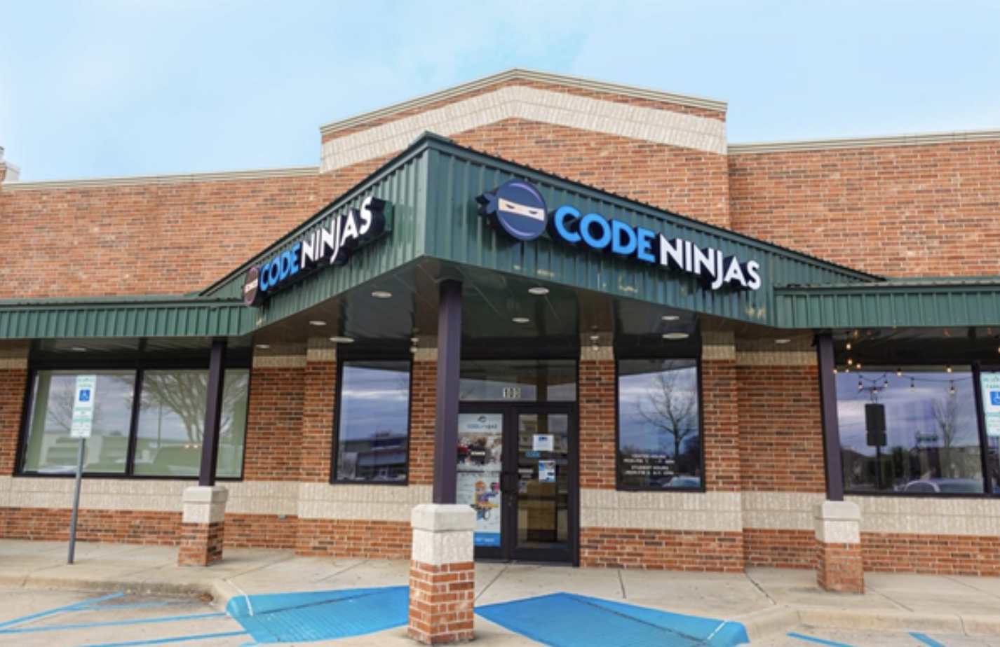

Work Experience
Charles Schwab - Data Engineering Intern
Summer 2024
Westlake, Texas
I'm excited for the summer!
Fidelity - Data Engineering Intern
Summer 2023
Westlake, Texas
Entering into the corporate world as a 19 year old man, I didn't really know what to expect. However, I kept an open
perspective and an inquisitive mindset to ensure my success as a data engineer. During the summer, I enhanced the data ingestion process and modernized the existing tech stack.
This was achieved by leveraging AWS, Boto3 API and Jenkins job automation to create an S3 bucket and configure policies using CloudFormation templates
Next, I incorporated NiFi, a powerful data integration platform, to efficiently transfer the data from our source database to S3.
Finally, I used the custom Python framework to handle the loading of data from S3 into the RDS staging zone and incorporated DBT to perform data transformations and create final tables, enabling more streamlined and efficient data processing.
Code Ninjas - Code Sensei

Frisco, Texas
This was my first time working a job where I worked as a coding instructor. I taught children aged 5-12 various STEM topics including LEGO Robotics, Java Script, Python, 3D Printing, Minecraft modding, and more.
Initially, I joined as an intern during the summer of my junior year. After spending the summer acting as an assistant teacher, I worked part time for the next 12 months. I gained valuable skills such as
communication, leadership, teamwork, and other interpersonal skills. By the time I left, I was one of the most instrumental employees in the organization and performed tasks such as onboarding new employeees,
filling in for the manager, and more.